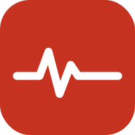

ClinRef
Referência clínica rápida — hospital, plantão e ambulatório. Abra um guia e use o menu do navegador em Adicionar à tela inicial para deixá-lo como atalho com ícone próprio.

Paciente CríticoXABCDE, choque, IOT, ventilação, PCR, arritmias, SCA, AVE, toxicologia, escalas PlantãoCondutas e prescrições por sistema, calculadoras e apresentações PsicofarmacologiaClasses, uso agudo, abstinências, troca e desmame, gestação, monitorizaçãoMaterial de consulta de uso pessoal. Não substitui a diretriz original, o protocolo da instituição nem o julgamento clínico. Cada guia traz a lista de referências e o limite de uso na última seção.